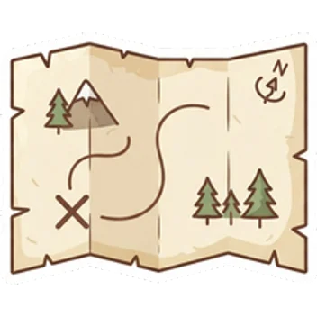
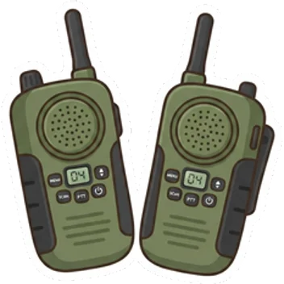
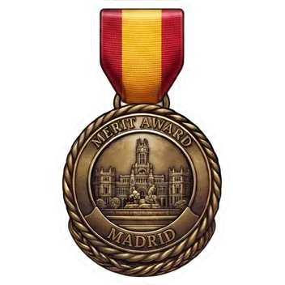
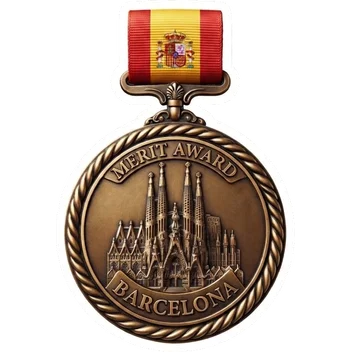
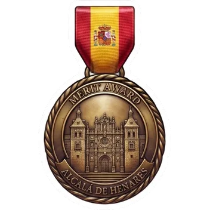
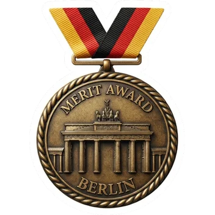
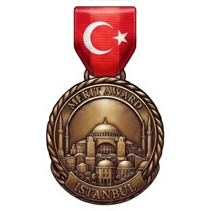

CEIP Leopoldo Calvo-Sotelo
¡Hola, exploradores!
Hoy descubrimos qué es la inteligencia artificial y cómo se crea una app para viajar
David G. Henriquez · creador de OnMyOwnTrip™

Una pregunta
¿Alguna vez habéis hablado con una máquina?
El altavoz que pone música, el móvil que responde, el juego que te entiende… ¡Muchas usan inteligencia artificial!
¿Qué es la inteligencia artificial?
Un ordenador que aprende con ejemplos
1. Mira
Miles y miles de fotos de perros y de gatos
2. Busca pistas
Orejas, bigotes, hocico… ¡así se distinguen!
3. Adivina
Ve una foto nueva y dice: ¡es un gato!
Igual que tú aprendiste a reconocer animales: viendo muchos.
¿Cómo aprende?
Aprende como tú con la bici
Repite esto muchísimas veces, muy muy rápido.
Superpoderes y límites
¿Qué sabe hacer la IA?
- Responder preguntas
- Contar historias
- Hablar en muchos idiomas
- Reconocer fotos
- Sentir como una persona
- Acertar siempre: ¡a veces se equivoca!
- Lo que nadie le ha enseñado
Regla de oro: si algo es importante, compruébalo con un adulto.
Manos a la obra
¿Cómo se hace una app?
Paso 1
Idea
Algo que ayude a la gente
Paso 2
Diseño
Dibujar cómo se verá
Paso 3
Programar
Escribir órdenes al ordenador
Paso 4
Probar
Familia y amigos la usan
Paso 5
Publicar
¡A la tienda de apps!
Trabajar con IA
Una persona y una IA: ¡un equipo!
Yo pongo…
La idea
Las decisiones
Revisar que todo esté bien
+
La IA pone…
Escribir código muy rápido
Buscar errores
Traducir a otros idiomas
La IA ayuda muchísimo, pero quien manda es la persona.
Mi idea
Un guía de viaje que te habla
Abres el mapa, tocas un Punto de interés y la app te cuenta su historia.
¿Tienes una duda? ¡Pregúntale lo que quieras!
La sorpresa
¡Y tiene un Modo Niños!
Con un solo botón, la app te habla como un amigo: historias divertidas, secretos y retos para exploradores.
Modo Niños
Responde retos y gana estrellas
Escucha
La historia del lugar, contada para ti
Responde
Un reto con preguntas sobre lo que has oído
Gana
Estrellas para tu mochila de explorador
Con tus estrellas…
¡Llena tu mochila de explorador!

Mapa del tesoro

Walkie-talkie

Sube de nivel
De principiante a gran explorador
Principiante
→
Intermedio
→
Avanzado
Cuantos más lugares visitas y más retos superas, más subes.
Colecciónalas todas
14 ciudades, 14 medallas

Madrid
España

Barcelona
España

Alcalá de Henares
España

Buitrago del Lozoya
España
Vaticano
Ciudad del Vaticano

Berlín
Alemania

Estambul
Turquía
¡A jugar!
¿Sabéis de qué ciudad es cada medalla?
Soluciones
¿Cuántas habéis acertado?
A
Roma
El Coliseo, donde luchaban los gladiadores
B
Segovia
El Acueducto, un puente que llevaba agua
C
Barcelona
La Sagrada Familia, ¡aún en obras!
¡Gracias, exploradores!
Pedid a vuestra familia que la pruebe en vuestro próximo viaje.
¿Tenéis alguna pregunta?
contacto@onmyowntrip.com